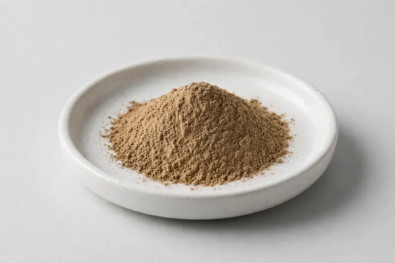

Codonopsis pilosula — a root-derived extract supplied for traditional tonic and botanical blend formulations.

Overview
Codonopsis pilosula root is a long-traded botanical in East Asian formulation repertoires, supplied as a brown to tan extract powder. Buyers typically specify it either as a 10:1 extract ratio or against a polysaccharide marker, depending on the blend it enters. As a Xi'an-based trading company sourcing through vetted partner producers, we work from your target ratio or marker and confirm feasible ranges honestly before any commitment.
Specifications below reflect commonly requested options in the market — not a stock list. Share your target spec and we'll confirm exactly what we can supply, honestly.
| Specification | Details |
|---|---|
| Botanical identity | Codonopsis pilosula root extract, spray-dried or drum-dried powder |
| Marker compound | Extract ratio or polysaccharides — commonly requested: 10:1, or polysaccharide content stated by UV method |
| Appearance | Light brown to brown fine powder |
| Mesh size | Typically 80–100 mesh (confirm per inquiry) |
| Testing | COA/TDS arranged on request; scope agreed per your spec |
Applications
Documentation
We don't claim in-house labs or certifications we don't hold. COA and TDS documents can be arranged on request, and testing scope is agreed against your specification before supply.
FAQ
Related products
Boswellia serrata
Key marker: Boswellic Acids / AKBA
View specs →Astragalus membranaceus
Key marker: Astragaloside IV
View specs →Lycium barbarum
Key marker: LBP
View specs →Rehmannia glutinosa
Key marker: 10:1 or catalpol
View specs →Camellia sinensis (pu-erh)
Key marker: Polyphenols / theabrownins
View specs →Send your target spec and volumes — we'll respond with a tailored quotation.
Request a Quote